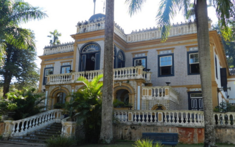

Tuismo na Cidade de Limeira

Fazenda Morro Azul
A Fazenda Morro Azul, em Limeira (SP), é um importante ponto turístico e um exemplo de arquitetura rural paulista do século XIX, com influências neoclássicas e portuguesas. A sede da fazenda, construída entre 1868 e 1877 por Silvério Rodrigues Jordão, é um palacete com azulejos, cantaria, estuque e mármore, mostrando uma característica urbana na arquitetura rural. A fazenda hospedou o Imperador D. Pedro II em duas ocasiões, em 1878 e 1886, e também recebeu visitas de personalidades como o Coronel Cândido Rondon e o escritor francês Frédérick Louis Sauser. .